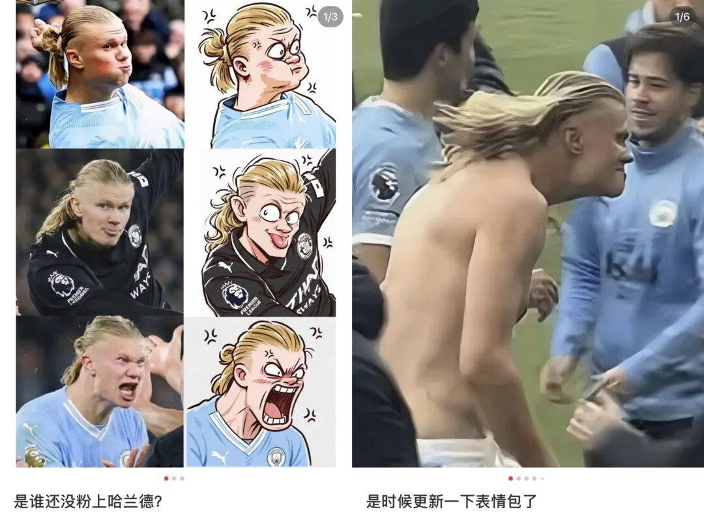

赞助价值取决于它能否被内容、商品、零售、节目与社群反复调用。
2026 FIFA WORLD CUP MARKETING ARCHIVE
2026 美加墨世界杯营销全案
供市场、品牌、媒介、电商、海外与产品团队备查的案例档案。它覆盖全球官方伙伴与赞助商、FIFA 授权商品、国家队和球星资源、中国品牌、总台转播合作、非官方 ambush 及世界杯期间出圈的国际案例；重点记录“做了什么、靠什么成立、能否迁移、证据在哪里”。
START HERE
从最有代表性的案例开始

CASE 005
蒙牛：《冠军的秘密》
资源溢出与“放下冠军”的赛后收束
已核验 / 已归档全球官方与产品化

CASE 007
蒙牛 x 海信：场边共创
把单品牌围挡改写为中国品牌共同叙事
已核验 / 已归档全球官方与产品化

CASE 034
王老吉 / WALOVI x 哈兰德
赛果触发、声音锚点与小程序闭环
已核验 / 已归档中国企业参与
CASE 035
东鹏补水啦 x 姆巴佩
产品名、比赛规则与广告语在同一秒成立
已核验 / 已归档中国企业参与
CASE 054
吉利银河：《豪门盛宴》
栏目陪伴、实景用车与留资转化
已核验 / 已归档持权媒体与大屏

CASE 059
小红书：104 场免费直播 +《正午聊球局》
大屏导入、社区讨论和创作沉淀
已核验 / 已归档持权媒体与大屏
REUSABLE JUDGEMENTS
先看方法，再看品牌
这四条判断来自本届赛后复盘，可迁移到奥运会、网球大满贯、电竞世界赛等长周期体育 IP。
大屏直播承担仪式感；小屏、线下与即时零售分别承担讨论、试用和交易。
球星、赌约和冠军资产需要预制正向、平淡、失利三套内容与转化出口。
没有官方权益的品牌，同样可以进入餐桌、酒吧、家庭、旅行和公共议题。
BROWSE BY BRAND